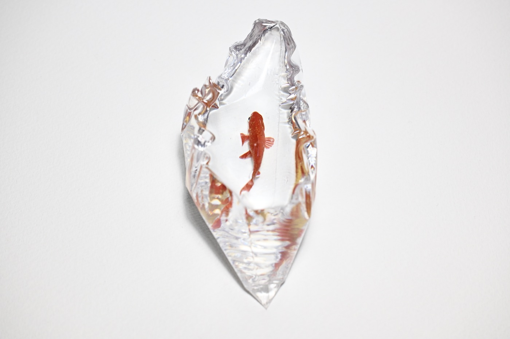
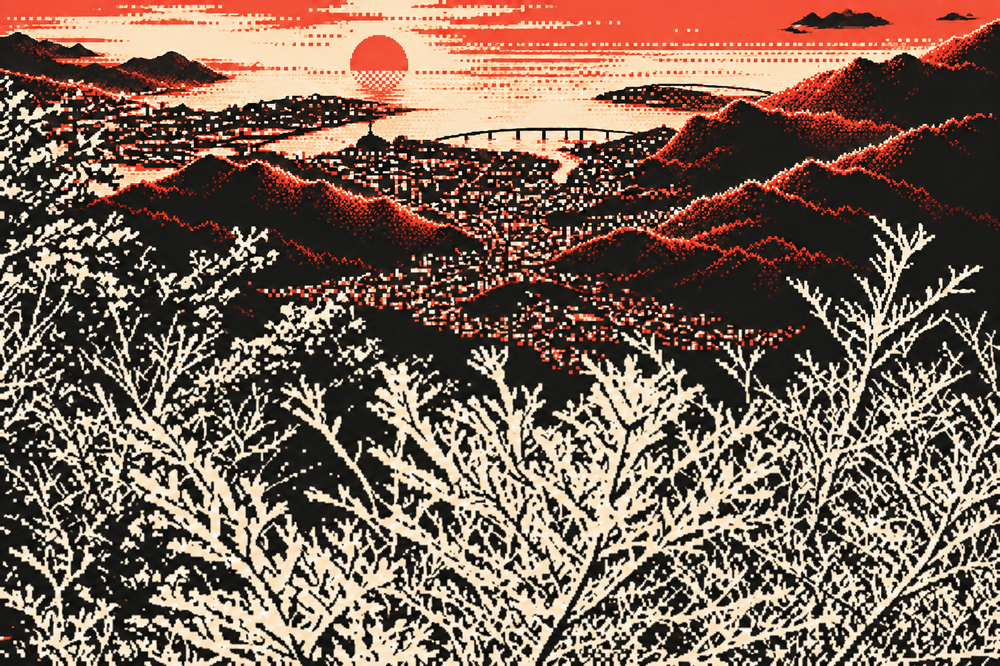
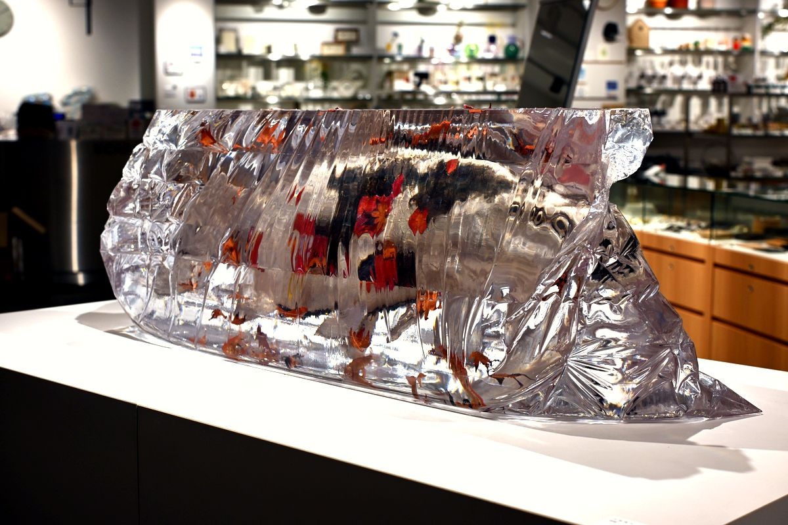

朱色和金
朱色の金魚を透明な樹脂に封入した作品。金属の輪郭と樹脂の外形が重なり、光を受けて異なる表情を見せます。
鋳造した金属を磨き、第一酸化銅を擦り付けて着色。金属の赤い色と樹脂の透明感を組み合わせています。
- 金属素材
- 銀・銅・真鍮（アルミ入り）

河﨑海斗 個展

2026年
MEDEL GALLERY SHU HIBIYA
冬至を迎え、最も長い夜が明けるとき、
再び陽の気が生まれる。
季節が巡り、光が移ろい、草木や生き物たちはその姿を変えていく。私たちが日々目にする風景もまた、絶えず変化し、同じ瞬間に立ち会うことは二度とない。
私は、そうした日常の中にある色彩や生命の気配に目を向け、金属と樹脂を用いて、その一瞬を形に留めようとしている。
金属の表面に生まれる色は、素材と技法、そして時間の作用によって現れる。移ろいゆく色を透明な樹脂の中に閉じ込めることで、過ぎ去る時間と、そこに確かに存在した記憶を保存する。
「一陽」は、終わりの中に始まりを見出す言葉である。
移ろいゆく自然の姿を留めることは、変化を否定するのではなく、その一瞬に宿る美しさを未来へとつなぐことなのかもしれない。
本展が、身近な風景に息づく小さな生命や、季節の巡りに改めて目を向ける機会となれば幸いである。
河﨑海斗

朱色の金魚を透明な樹脂に封入した作品。金属の輪郭と樹脂の外形が重なり、光を受けて異なる表情を見せます。
鋳造した金属を磨き、第一酸化銅を擦り付けて着色。金属の赤い色と樹脂の透明感を組み合わせています。

銀、銅、さはり、真鍮、赤銅、四分一など、複数の金属を用いた作品。素材と着色技法の違いが、鯉の色彩や模様を生み出しています。
煮色酸化、緋銅酸化、硫化、銀メッキなどで金属の表面を仕上げ、透明な樹脂に封入しています。
工程 01
鋳型に金属を流し込み、かたちをつくる工程。《朱色和金》は真空加圧鋳造法、《錦鯉》は真空加圧鋳造法と重力鋳造で制作しています。
工程 02
鋳造した金属を磨き、酸化や硫化などの技法で着色。素材と表面処理の組み合わせによって、異なる色や質感が生まれます。
工程 03
着色した金属を透明な樹脂に封入。金属の色とかたちを樹脂の中に留め、移ろう自然の一瞬を表現しています。
〒100-0011
東京都千代田区内幸町1-1-1
帝国ホテルプラザ1階
帝国ホテルの有料駐車場あり。
30分600円。